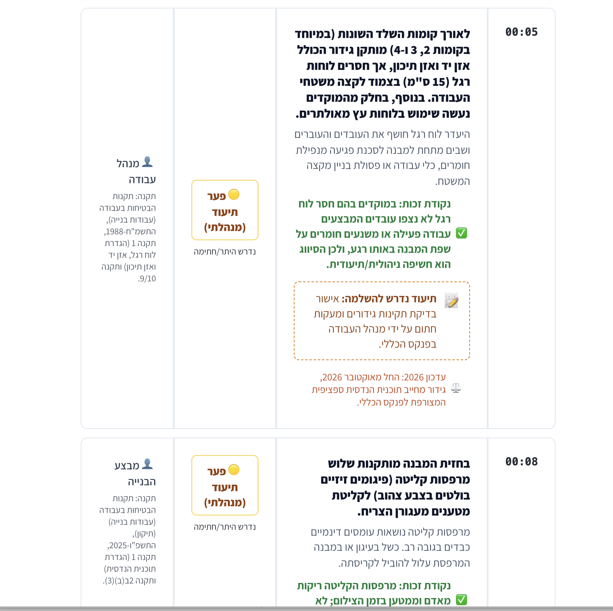

בקרת סיכונים יומית
למנהלים ויזמים
מערכת ניתוח חזותי וזיהוי מגמות לאתרי בנייה. הופכים וידאו שטח פשוט לדו"ח ניהולי ממוקד-פעולה, ללא צורך בהטמעת חומרה או מצלמות.
מערכת EyeSite מציעה פתרון מתקדם לניתוח חזותי שמבוסס על טכנולוגיות מתקדמות להבנת וידאו והסקה מריבוי פריימים. המערכת מתמקדת ביצירת שכבת תיעוד נוספת שתומכת בהחלטות ניהוליות, תוך שהיא מבוססת אך ורק על מידע חזותי מצולם.
המערכת אינה מחליפה בדיקות הנדסיות או ביקורות בטיחות מוסמכות, ואינה מהווה ייעוץ משפטי. היא מספקת דו"חות ממוקדי-פעולה הכוללים ממצאים אופרטיביים ברורים עם חותמת זמן, מיקום, תיאור ודרגת חומרה — דוגמה לדוח בהמשך הדף. דו"חות אלו מתאימים לשימוש ניהולי ולהוכחת קיום מנגנוני בקרה מתמשכים, אשר מעידים על אימוץ טכנולוגיות ואמצעי בטיחות נוספים וחדשים.
החל מאוקטובר 2026 חוק הבטיחות החדש בתוקף מלא. בקשת איגוד הקבלנים לדחיית מועד הכניסה לתוקף נדחתה. מעתה ואילך — ובפרט בשנת 2027 — נדרשים יזמים ומנהלים לנקוט בצעדים הדרושים להגנה על העובדים והאתר. עם ההתרחבות של האחריות הפלילית והמנהלית כלפי יזמים ובעלי פרויקטים, המערכת מספקת כלי תומך-החלטה שמאפשר ניהול סיכונים סביר וממומן, תוך שהיא מחזקת את תפקידם של מומחי הבטיחות והמהנדסים באתרי העבודה.
תהליך 4 השלבים (איך זה עובד)
5 דקות ביום. 24 שעות לדוח מלא. 30 יום לשינוי תרבותי.
הקלטה: סרטון מהאתר (5 דקות)
מה מנהל העבודה עושה:
- • סיור באתר
- • צילום סרטון וואטסאפ של 1-5 דקות
- • שליחה למספר הוואטסאפ הייעודי
- • ללא הדרכה. ללא הגדרות. ללא ציוד מיוחד.
תזמון: אמצע יום העבודה. כ-5 דקות.
ניתוח: ראייה ממוחשבת + בדיקת חוק (10 דקות)
מה המערכת עושה:
- • 4 מודלי AI עצמאיים מנתחים את הסרטון במקביל
- • זיהוי ויזואלי: קסדות, מעקות, ציוד, מפגעים
- • בדיקה מול בסיס ידע רגולטורי (חוק אוקטובר 2026)
- • אימות כפול של הממצאים
עיבוד: אוטומטי. כ-10 דקות.
דוח: הפקת PDF (עד שעה)
מה הדוח כולל:
- ✓ זיהוי הפרות (עם ציטוט סעיפי החוק)
- ✓ רמת חומרה (קריטי / גבוה / בינוני / נמוך)
- ✓ המלצות לפעולות מתקנות
- ✓ ציון בטיחות
- ✓ מגמה היסטורית (שיפור/החמרה)
שליחה: בוואטסאפ. באותו יום!
פעולה: המשרד לוקח פיקוד
מה המנהל עושה:
- • קבלת הדוח בוואטסאפ
- • סקירת ממצאים בישיבת הבוקר
- • הנחיית מנהל העבודה לפי סדרי עדיפויות
- • תיקון הליקויים באותו היום
- • חזרה על התהליך למחרת
תוצאה: ביום ה-30, תרבות הבטיחות הופכת לטבע שני.
6 יתרונות מפתח
1. משתלם כלכלית
בטיחות יומית בעלות של עשרות שקלים ליום לכל בניין, מותאם להיקף ולמורכבות הפרויקט.
מיועד לקבלנים בשוק הבינוני (5-50 עובדים), לא רק לפרויקטי ענק.
2. פריסה מיידית
ללא חומרה. ללא התקנה. ללא הגדרות של שבועות. התחילו להשתמש עוד היום.
סרטון וואטסאפ = תיעוד ציות מיידי.
3. מותאם לחוק אוקטובר 2026
נבנה במיוחד עבור חוק הבטיחות החדש בישראל, לא רק לזיהוי מפגעים כללי.
מבין את הרגולציה המקומית טוב יותר מכל כלי AI כללי.
4. תיעוד יוצר הגנה
365 ימים של ניטור רציף = הוכחה ל"השתדלות סבירה" נדרשת.
חלק מחברות הביטוח מכירות בזה ומפחיתות פרמיות.
5. תמיכה אישית
לא עוד תוכנה ללא פנים. תקשורת ישירה מול יורם המייסד.
אתם לא עוד מספר במערכת, אתם לקוחות חשובים.
6. החוק כבר כאן
אכיפת החוק החלה באוקטובר 2026. 2027 מתקרבת.
כל יום של תיעוד הוא יום של הוכחת בקרה.
ROI: מחזיר את עצמו תוך 3 חודשים
חיסכון ישיר בעלויות
ערך מניעת סיכונים
צפו במערכת בפעולה
סיור, זיהוי ודיווח - ב-40 שניות
ניתן להוריד את הסרטון כאן אם אינכם מצליחים לצפות בו.
📋 הצגת דוגמה לדוח המקצועי

תצוגה מקדימה של עמוד 1 - דוח בקרת סיכונים יומית
צפו בדוח המלא כדי לראות את כל הממצאים: זיהוי הפרות, רמות חומרה, הוכחות מצולמות והמלצות לפעולות מתקנות.
פתח את הדוח המלא (PDF)ציר זמן לשינוי ב-30 יום
ככל שמשתמשים יותר, ההגנה חזקה יותר
שלב הבלבול
"למה עושים את זה? זו עבודה נוספת". הצוות סקפטי ורואה בזה ביורוקרטיה. הממצאים נראים קטנוניים.
תפקיד המנהל: לנרמל את התהליך ולהפוך אותו לשגרה.
שלב ההבנה
"אם נתקן את הליקויים לפני הצילום, לא יהיו הערות בדוח". הצוות הופך לפרואקטיבי.
תוצאה: מזיהוי הפרות למניעת הפרות.
שלב הציפייה
"המנהל מגיע מחר עם הדוח. בואו נוודא שהכל תקין". הצוות מצפה למעקב היומי ולוקח אחריות.
ההתנהגות הופכת להרגל.
שלב הנורמה החדשה
"ככה אנחנו עובדים כאן". תרבות הבטיחות מוטמעת. ניטור יומי הוא נוהל עבודה סטנדרטי.
האתר מנהל את עצמו בטיחותית. המערכת עובדת כמתוכנן.
מוכנים לפרוטוקול 2027?
אכיפת החוק החלה באוקטובר 2026. אל תחכו לביקורת הבאה — קבלו שליטה על אתר הבנייה כבר מחר בבוקר.